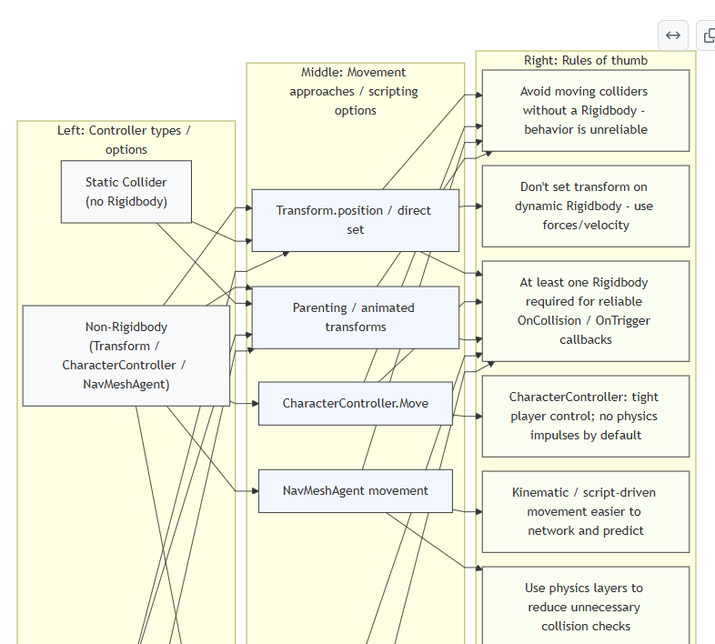
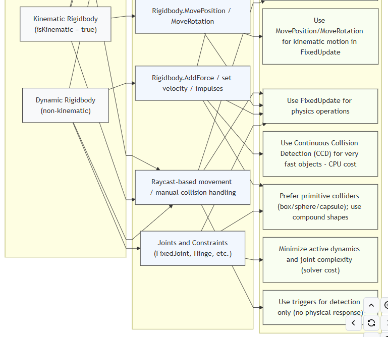
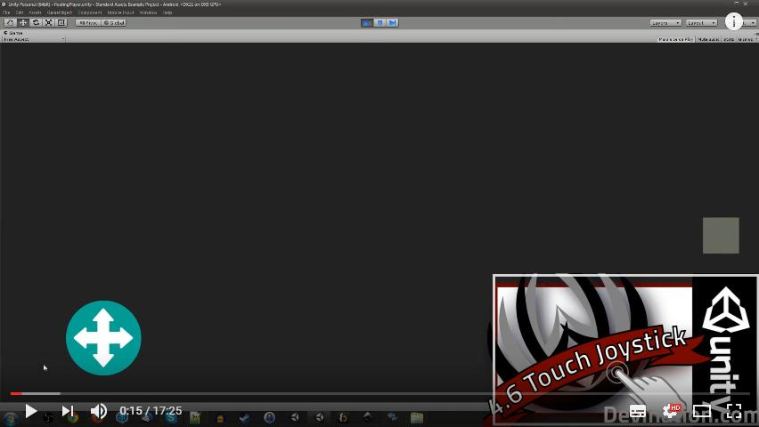

Lecture 08: Input and Scripted Movement
Learning outcomes
5MMCS001W lecture and tutorial: Input Manager (again), scripted movement, collisions.
By the end of this lecture, you should be able to:
- Read keyboard and axis input and turn it into frame-rate-independent movement.
- Choose between Transform, kinematic Rigidbody and dynamic Rigidbody movement, and call each from the correct update loop.
- Choose the right dynamics configuration (Transform-only, kinematic or dynamic) ready for the collision and trigger work in Lecture 09.
- Use raycasts, Lerp, MoveTowards and LookAt for targeted movement.
Follow the core sequence: input recap, vectors and Transform movement, then Rigidbodies and physics movement. Later slides contain raycasting, interpolation, optional legacy examples and next steps. Colliders, triggers and the collision matrix continue in Lecture 09.
Core and extension pathway
Core:
Move objects with Transform and Rigidbody methods, and detect collisions and triggers (Tutorials 02–03 and 08).
Optional:
Raycasting, Lerp/MoveTowards/LookAt extensions, and the legacy touch-widget examples flagged on the final slide.
Related lectures and tutorials
Input recap: Input Manager, GetKey and GetAxis
Recap: input and the legacy Input Manager
Legacy workflow: this lecture’s examples use the legacy Input Manager (Input.GetKey, Input.GetAxis), as in Lecture 07. Unity’s newer Input System package is the recommended path for new projects.
- Every program needs input and output: the input is what the user gives the program; the output is what the user sees.
- Unity processes input from the keyboard, mouse and joysticks.
- The Input Manager is at Edit > Project Settings > Input Manager. Each axis (for example Horizontal) has a Name used in code, Positive and Negative Buttons, Alt. Positive and Alt. Negative Buttons, a Type (Keyboard/Mouse/Joystick) and an Axis.
Full walkthrough: Lecture 07, slide 2: the legacy Input Manager and axes
Screenshots: Input Manager axes


GetKey and GetAxis
Objects can be moved in two ways: by playing animations through animation triggers (as in the Lego Brick tutorial), or by adjusting the object’s Transform directly with scripted movement – the focus of this lecture.
GetKey and GetButton
Return a bool: true while the key or button is held.
Example: CreatePrimitivesFromImport.cs on the Main Camera can access all the cube GameObjects. Key A rotates Cube1 on the Y axis, key B rotates Cube2 on the X axis and key C rotates Cube3 on the Z axis. The input check sits in Update(), after checking that the primitives have been initialised. Each cube rotates only while its key is held, and stops at its last angle when the key is released.
rotationSpeed is in degrees per second, for example private float rotationSpeed = 90f;. Multiplying by Time.deltaTime makes the rotation frame-rate independent (slide 4).
GetAxis
- Unlike GetKey and GetButton (bool), GetAxis returns a float between -1 and 1.
- Axes are set in the Input Manager (Edit > Project Settings > Input Manager). Horizontal and Vertical are the standard axes, and their keys can be changed there.
Unity references
Vectors and Vector3
Scalars, points and vectors
Scalars, points, vectors
- Three basic types of entities used to define geometric objects.
- Defined from mathematical, programming and geometric perspectives.
Points
- In 3D geometric systems, a point is a location in space.
- Only location, no size.
- Best defined using a reference or coordinate system.
Vectors (lines)
- Connect points with line segments.
- Also called vectors (direction and magnitude – velocity, force, length).
- Have a scalar (magnitude) value – a real number.
Vector3 in scripted movement
Vector3 represents 3D vectors and points. This structure is used throughout Unity to pass 3D positions and directions around. It also contains functions for doing common vector operations.
Here block is a Rigidbody prefab reference, blockX is the number of blocks, and Quaternion.identity means no rotation.
Moving with Transform: Translate, Rotate and Time.deltaTime
Tutorial 02–03: Translate and Rotate
Direct input: move an object by changing its Transform – transform.Translate, transform.Rotate or transform.position – from Update().
Space relative to
Space.Self(default): move along the object’s own local axes.Space.World: move along the scene’s world axes.
Tutorial 02–03 uses this Transform movement on an object with a collider and a dynamic (non-kinematic) Rigidbody, so it can push the Rigidbody wall. It works for the exercise, but bypasses the physics engine. Slide 6 shows the recommended physics approach: moving by calling Rigidbody.MovePosition or Rigidbody.AddForce from FixedUpdate.
Unity Learn: Translate and Rotate
Unity Scripting API references
Time.deltaTime: frames vs seconds
Time.deltaTime is the interval, in seconds, since the last frame. Knowing it gives an exact reading of how far each object should have moved since the previous frame was presented, so multiplying movement values by Time.deltaTime smooths out frame-rate inconsistencies.
What it’s for:
- Changing values to be based on seconds rather than frames.
- Multiplying by a speed variable, so speed can be changed programmatically.
In general, set things up based on time rather than frames: time is constant and frame rates are not. If you drop frames, it won’t affect the timing of elements.
- Always use
Time.deltaTimewhen moving objects over time (same speed at any frame rate). - Never use
Time.deltaTimefor input that is already frame-rate independent, such as mouse movement.
Rigidbody basics: Transform, Rigidbody and Is Kinematic
Transform and Rigidbody
Transform: position, rotation and scale
Every object in a scene has a Transform. It's used to store and manipulate the position, rotation and scale of the object.
Every Transform can have a parent, which allows you to apply position, rotation and scale hierarchically. This is the hierarchy seen in the Hierarchy window.
Rigidbody
A Rigidbody is the main component that enables physical behaviour for an object. Adding one puts the object’s motion under the control of Unity's physics engine: even without any code, it will be pulled downward by gravity and, if a Collider is also present, will be moved by incoming collisions.
Rigidbodies open the gateway to realistic collisions, varied types of joints and other behaviours. Manipulating a GameObject by adding forces to its Rigidbody creates a very different behaviour from adjusting its Transform directly. As a good rule of thumb, don’t manipulate the Rigidbody and the Transform of the same GameObject – only one or the other.
Mesh, Collider, Rigidbody, kinematic and triggers
Mesh
- Polygon mesh for rendering, rasterising and display.
Collider
- Simple invisible shape that represents the object in the physics engine – can be a box, sphere, capsule or the whole mesh (Mesh Collider).
Rigidbody
- Under Unity’s physics engine; affected by gravity if enabled.
- Reacts to collisions with other objects that have colliders.
- A collider with no Rigidbody is a static collider.
Kinematic Rigidbody
- Has a Rigidbody with Is Kinematic enabled.
- Does not move unless moved by animation or script.
- Other objects with Rigidbodies react to it if both have colliders.
Triggers
- A collider with Is Trigger enabled detects overlaps without blocking movement, and sends
OnTriggermessages – for example to play an animation, open a door or collect an item.
Video: Rigidbody and Collisions | Unity Tutorial
Dynamic, kinematic and static bodies
In 3D, the Is Kinematic checkbox on the Rigidbody chooses between dynamic and kinematic; a collider with no Rigidbody is static. (Rigidbody 2D offers the same three choices as its Body Type setting.)
Dynamic (Is Kinematic off)
moves under simulation and is affected by forces such as gravity and collisions.
Kinematic (Is Kinematic on)
moves only when script or animation moves it; it isn’t affected by forces, gravity or collisions, but it can push dynamic bodies.
Static (collider, no Rigidbody)
Doesn’t move under simulation.
isKinematic
Controls whether physics affects the Rigidbody. If isKinematic is enabled, forces, collisions or joints will no longer affect the Rigidbody; it is under full control of animation or script (preferably Rigidbody.MovePosition, slide 6). Kinematic Rigidbodies still affect the motion of other, dynamic Rigidbodies through collisions.
Tutorial 02–03 uses a dynamic (non-kinematic) Rigidbody: collisions and gravity apply, but the object is moved directly through its Transform (slide 4).
| Feature | Kinematic Rigidbody | Dynamic Rigidbody using forces or velocity | Dynamic Rigidbody moved through Transform (tutorial setup) |
|---|---|---|---|
| Movement control |
Script or animation specifies movement, preferably using
MovePosition and MoveRotation
in FixedUpdate.
|
Script applies forces or sets velocity in FixedUpdate;
physics resolves the resulting movement.
|
Script directly changes the Transform, while physics also updates the same object's motion. |
| Forces and gravity | Not affected by physics forces or automatic gravity. Any falling behaviour must be scripted. | Responds to forces and gravity when enabled. Repeatedly setting velocity can override parts of that response. | Still responds to forces and gravity when enabled, but direct Transform changes can interfere with the resulting motion. |
| Collision response on this object | Physics does not stop or deflect its scripted movement. The controller must check for obstacles and constrain movement if required. | Physics resolves collisions and adjusts motion. Repeated velocity commands can counteract collision impulses. | Physics can respond to contacts, but direct Transform movement bypasses physics movement and can cause penetration, missed collisions or jitter. |
| Pushes other dynamic bodies | Yes, through collider contact. | Yes, through collider contact. | Can do, as demonstrated in the tutorial, but results are less reliable when moved directly through the Transform. |
| Typical use | Scripted moving platforms and animated objects that should influence physics objects without being pushed themselves. | Falling blocks, rolling balls and player controllers that participate in physics. | Introductory demonstration of direct movement combined with physics interaction; avoid for robust continuous movement. |
Tutorial note:
The tutorial combines direct Transform movement with a dynamic
(isKinematic = false) Rigidbody. This gives immediate
scripted control while retaining gravity and physics interaction,
but the scripted movement itself bypasses the physics solver.
For a more robust dynamic controller, use forces or velocity in
FixedUpdate, preserving vertical velocity when gravity
should control falling.
Terminology: Kinematic and dynamic describe the Rigidbody's physics mode, not the Transform. “Hybrid control” describes the combination of scripted and physics behaviour; it is not a separate Rigidbody mode. Collision behaviour assumes enabled, non-trigger colliders and physics layers configured to interact.
Moving with physics: FixedUpdate, AddForce, velocity and MovePosition
Update vs FixedUpdate
Update
Update is called once per frame, so if the game is running at 24 fps it is called 24 times a second. Games never run at a constant frame rate, so the time between Update calls varies.
- Update is used for moving non-physics objects.
- Update is used for receiving input.
- Update is used for simple timers.
FixedUpdate
As its name suggests, FixedUpdate is called at a fixed time interval (0.02 seconds by default), so the time between two consecutive calls is always the same, unlike Update.
It is used for physics-related tasks, such as applying a force to a Rigidbody. Read input in Update, store it in a variable, then apply it to the Rigidbody in FixedUpdate.
Rule of thumb: which method, called from where
Caveat: static vs kinematic mainly affects how Unity handles physics optimisation.
| Object | Move it with | Call from |
|---|---|---|
| Non-Rigidbody (Transform only) | transform.Translate, transform.Rotate |
Update |
| Kinematic Rigidbody | Rigidbody.MovePosition, Rigidbody.MoveRotation |
FixedUpdate |
| Dynamic (non-kinematic) Rigidbody | Rigidbody.AddForce, Rigidbody.AddTorque (or set its velocity) |
FixedUpdate |
Tutorial 02–03 is the exception: it moves a dynamic Rigidbody with Transform from Update. That works for the exercise, but is not best practice.
AddForce and velocity (dynamic Rigidbodies)
AddForce (dynamic Rigidbodies)
Rigidbody.AddForce moves a dynamic (non-kinematic) Rigidbody that is affected by physics and interacts with other physics objects. Call it from FixedUpdate. Forces are mass dependent unless you use ForceMode.Acceleration or ForceMode.VelocityChange.
Velocity (dynamic Rigidbodies)
Setting the velocity directly gives an immediate, mass-independent speed.
Kinematic Rigidbodies are not moved by physics, so they cannot be given a velocity; move them with MovePosition instead (Section 6.4).
Unity Scripting API references
MovePosition (kinematic Rigidbodies)
MovePosition (kinematic Rigidbodies)
Rigidbody.MovePosition moves a kinematic Rigidbody – not affected by physics, but interacting with physics objects – smoothly from FixedUpdate. It can also move a dynamic Rigidbody; you could increase that body’s mass so it isn’t pushed, but that is not ideal – use a kinematic Rigidbody instead.
Rigidbody.MovePosition scripting reference
Unity Discussions: How to move a kinematic Rigidbody smoothly
Forces and physics with a character
Who owns the movement?
An object’s motion is owned either by the physics simulation or by your code. With a dynamic Rigidbody you apply forces and Unity decides the result; with a kinematic Rigidbody (or plain Transform) you decide the result and physics just observes.
Most character-movement bugs come from mixing the two owners – for example setting a Transform while physics is also moving the body. Pick one owner per object.
Kinematic Rigidbodies and Collision
Kinematic Rigidbodies pass through other kinematic Rigidbodies and static colliders without being stopped (they are not affected by forces or momentum), and by default they send no collision messages for those contacts (see Contact Pairs Mode, Lecture 09). They do detect collisions and triggers with dynamic (non-kinematic) Rigidbodies.
Custom Collision Resolution for Characters
If you need an object to collide with other objects but not be affected by physics forces, either use an existing Character Controller, or use a kinematic Rigidbody and code a custom collision resolution for it.
Dynamic Rigidbody Physics-Based Controllers are not ideal for Characters
A physics-based controller is not usually ideal for a character controller, as seen in this week’s Unity example.
The reason is inertia: forces take time to accelerate and stop a body, so a force-driven character feels floaty, slides past stopping points and overshoots. Players expect an instant response to input – which is physically unrealistic – so character movement usually cheats physics rather than obeying it.
Character Controller: the engineered middle ground for character control that affects other objects and responds to collisions
Unity’s CharacterController component is essentially a pre-built kinematic capsule with custom collision resolution: it is not pushed by forces, but its Move method slides along walls, handles slopes and steps, and reports collision flags. In other words, it is the “code a custom collision resolution” option above, already written for you.
Characters are the case where none of the three rows in the Section 6.2 rule-of-thumb table is a perfect fit – which is why dedicated character controllers exist.
Unity Manual: Character Controller component reference
Unity Discussions: Collision detection for kinematic Rigidbodies
Unity Discussions: Kinematic Rigidbody does not collide with wall
Controllers: dynamic, kinematic and non-Rigidbody
Controller types and the Controller Matrix project
Static
Static Collider – Collider, no Rigidbody
This is a GameObject that has a collider but no Rigidbody. Static colliders are used for level geometry which always stays at the same place and never moves around. Incoming rigidbody objects will collide with the static collider but will not move it.
Dynamic Rigidbody Controllers
Physics‑driven objects. Movement via forces/impulses/velocity. Fully simulated by the physics engine; realistic reactions to collisions, gravity, stacking.
Rigidbody Collider – Collider, (Dynamic) Non-Kinematic Rigidbody – Tutorial 02–03 control objects
This is a GameObject with a collider and a normal, non-kinematic Rigidbody attached. Rigidbody colliders are fully simulated by the physics engine and can react to collisions and forces applied from a script. They can collide with other objects, including static colliders, and are the most commonly used collider configuration in games that use Physics.
Kinematic Rigidbody Controllers
Script‑driven motion with a Rigidbody present but not simulated by forces. It can move other dynamic bodies but is not itself pushed by physics. Use for predictable moving objects that still need physical interactions.
Rigidbody Collider – Collider, Kinematic Rigidbody – best practice control objects, physics controlled
This is a GameObject with a collider and a kinematic Rigidbody attached. It can be controlled by animation and scripted transforms. It can collide with other objects (other objects get affected), including static colliders (with some adjustment – see Contact Pairs Mode, Lecture 09).
Non-Rigidbody Controllers – Custom and Unity Controllers
Movement via Transform, CharacterController, or NavMeshAgent. Not physics‑simulated. Good for precise control, pathing, or decorative movement; requires special handling to interact with physics.
No Rigidbody Collider: custom control code (or Unity’s CharacterController) acts as a wrapper for physics and gravity.
Controller chart: non-Rigidbody, dynamic, kinematic and static
Chart – non-RB, RB vs Dynamic, Kinematic and Static (Module-Code/Controllers on GitHub)


Raycasting, Lerp, MoveTowards and LookAt
Raycasting (Tutorial 02)
Raycast/Linecast:
Tracks the mouse on the 2D screen so we can have 3D transforms that relate to it.
Physics.Raycast casts a ray from point origin, in direction direction, of length maxDistance, against all colliders in the scene.
You may optionally provide a LayerMask to filter out any colliders you aren't interested in generating collisions with.
Specifying queryTriggerInteraction allows you to control whether or not trigger colliders generate a hit, or whether to use the global Physics.queriesHitTriggers setting.
This example creates a simple raycast, projecting forwards from the object's current position, extending for 10 units.
Unity has raycasting as part of some libraries for input and selection.
Unity Scripting API references
Lerps and eases
Lerps – linear increments
Eases – lerps can ease.
Game Dev Beginner: The right way to Lerp in Unity (with examples)
Chico Unity3D: How to Lerp like a pro
- All use Transform, Vector3, a speed float and
Time.deltaTime. - Can be wired up to UI Buttons.
- More when we look at camera controls.
Lerp
Linearly interpolates between two vectors.
Interpolates between the vectors a and b by the interpolant t. The parameter t is clamped to the range [0, 1]. This is most commonly used to find a point some fraction of the way along a line between two endpoints (for example, to move an object gradually between those points).
When t = 0 it returns a. When t = 1 it returns b. When t = 0.5 it returns the point midway between a and b.
This is the definitive lerp and easing reference: How to Lerp like a pro
Practical example: a point 75% of the way along
Smoothing towards a moving target
This moves a fraction of the remaining distance each frame: a quick ease-out, but its speed depends on frame rate and it never quite arrives. Use the fixed-duration script in Section 8.4 for predictable timing.
Lerping script
Moves the object up by moveDistance over lerpTime seconds. Press Space to restart.
MoveTowards
Moves a point current in a straight line towards a target point.
The value returned is a point maxDistanceDelta units closer to the target, along the line between current and target. If the target is closer than maxDistanceDelta, the returned value equals the target (the movement will not overshoot the target). Negative values of maxDistanceDelta push the point away from the target.
Video: Unity: Input, Simple Player Movement, and LookAt/MoveTowards
LookAt
Handles rotation orientation and camera-interest animation towards an object.
Will be useful in waypoint cameras with swapped-out targets.
Apply and review: demo, controller chart and checklist
Demo: Kinematic and dynamic controllers project (GitHub)
The Unity Controllers 2026 project (3DIMD-Tutorial-Projects on GitHub) is a small Unity project that puts this lecture into practice: two scenes – Kinematic RigidBody Controllers and Dynamic RigidBody Controllers – where the same Lego objects are moved by different controller scripts, so you can feel the difference between each approach. Its README contains the live version of the controller chart from slide 7. It is also available on the Downloads page.
Kinematic controller scripts (Rigidbody with Is Kinematic on, moved from FixedUpdate)
All six follow the same pattern: force isKinematic = true in Awake, turn on Rigidbody interpolation for smooth visuals, then move with MovePosition/MoveRotation (slide 6).
KinematicTinyController– the minimal proof of concept: read axes in Update, store a desired velocity, apply it in FixedUpdate.KinematicTinyController.csvoid Update(){// Read input in Update for responsivenessVector3 input = new Vector3(Input.GetAxisRaw("Horizontal"), 0f, Input.GetAxisRaw("Vertical"));desiredVelocity = input.normalized * speed;}void FixedUpdate(){rb.MovePosition(rb.position + desiredVelocity * Time.fixedDeltaTime);}KinematicWASDController– the same pattern with per-key WASD/arrow input (Input.GetKey, slide 2) and turn-towards-movement rotation.KinematicWASDController.cs// Update: per-key inputif (Input.GetKey(KeyCode.W)) v += 1f;if (Input.GetKey(KeyCode.D)) h += 1f;// FixedUpdate: turn towards the movement direction, then moveQuaternion target = Quaternion.LookRotation(desiredVelocity.normalized, Vector3.up);rb.MoveRotation(Quaternion.RotateTowards(rb.rotation, target, rotationSpeed * dt));rb.MovePosition(rb.position + desiredVelocity * dt);KinematicControlled– position-only version; the comment marks where input or network prediction plugs in.KinematicControlled.csvoid Awake(){rb = GetComponent<Rigidbody>();rb.isKinematic = true; // script-driven motionrb.interpolation = RigidbodyInterpolation.Interpolate; // smoother visuals}// Update: gather input / network prediction heredesiredVelocity = input.normalized * speed;KinematicFollow– follows a target withVector3.MoveTowards(slide 8) applied throughMovePosition.KinematicFollow.csvoid FixedUpdate(){Vector3 next = Vector3.MoveTowards(rb.position, target.position, speed * Time.fixedDeltaTime);rb.MovePosition(next);}KinematicRotate– turret-styleLookRotation/RotateTowardsapplied throughMoveRotation.KinematicRotate.csvoid FixedUpdate(){Quaternion targetRot = Quaternion.LookRotation(lookTarget.position - rb.position);rb.MoveRotation(Quaternion.RotateTowards(rb.rotation, targetRot, rotationSpeed * Time.fixedDeltaTime));}KinematicWaypointMover– patrols a waypoint list; the moving-platform pattern.KinematicWaypointMover.csvoid FixedUpdate(){Transform target = waypoints[idx];rb.MovePosition(Vector3.MoveTowards(rb.position, target.position, speed * Time.fixedDeltaTime));if (Vector3.Distance(rb.position, target.position) < 0.1f)idx = (idx + 1) % waypoints.Count; // next waypoint, looping}
Dynamic controller scripts (non-kinematic Rigidbody)
physicsController_rbAF–AddForcein world space with pseudo-code comments and stretch tasks (the Tutorial 02–03 style starting point).physicsController_rbAF.csvoid FixedUpdate(){// World-space forces: Left/Right/Forward/Backif (Input.GetKey("a")) rb.AddForce(Vector3.left);if (Input.GetKey("d")) rb.AddForce(Vector3.right);if (Input.GetKey("w")) rb.AddForce(Vector3.forward);if (Input.GetKey("s")) rb.AddForce(Vector3.back);}physicsController_rbTAF–AddForcealong the object’s local axes usingForceMode.Acceleration, so movement is independent of mass.physicsController_rbTAF.cs// FixedUpdate: local (object-space) axesif (Input.GetKey(KeyCode.W)) input += transform.forward;if (Input.GetKey(KeyCode.A)) input += -transform.right;// ForceMode.Acceleration: movement independent of massif (input.sqrMagnitude > 0f)rb.AddForce(input.normalized * speed, ForceMode.Acceleration);physicsController_rbMP/physicsController_rbMPT–MovePositionon a Rigidbody from different key sets, for direct comparison with the force-based versions.physicsController_rbMP.cs// FixedUpdate: IJKL input in local (object) spaceif (Input.GetKey(KeyCode.I)) input += transform.forward;if (Input.GetKey(KeyCode.L)) input += transform.right;// MovePosition expects a target positionrb.MovePosition(rb.position + input * speed * Time.fixedDeltaTime);
What to look for in the demo
- The core kinematic pattern: input read in Update, movement applied in FixedUpdate (slide 6).
- How
MovePositionfeels instant and exact, whileAddForceaccelerates, drifts and overshoots (slide 6, forces and characters). - World-space vs local-space movement:
Vector3.forwardvstransform.forward(slide 4, Space relative to). - Input vectors are normalised so diagonal movement isn’t faster.
- Rigidbody Interpolate smooths kinematic motion between physics steps.
Controller chart: types, movement approaches and rules of thumb
The controller chart from slide 7 and the demo project README (3DIMD-Tutorial-Projects on GitHub), regrouped for reading: each group is one controller type listing its movement approaches, and each approach box lists its rules of thumb, numbered as in the reference list below the chart.
Non-Rigidbody (Transform / CharacterController / NavMeshAgent)
Transform.position / direct set
- 2. Don't set transform on dynamic Rigidbody - use forces/velocity
- 5. At least one Rigidbody required for reliable OnCollision / OnTrigger callbacks
- 10. Avoid moving colliders without a Rigidbody - behavior is unreliable
CharacterController.Move
- 4. CharacterController: tight player control; no physics impulses by default
- 5. At least one Rigidbody required for reliable OnCollision / OnTrigger callbacks
- 10. Avoid moving colliders without a Rigidbody - behavior is unreliable
NavMeshAgent movement
- 8. Use physics layers to reduce unnecessary collision checks
- 10. Avoid moving colliders without a Rigidbody - behavior is unreliable
- 12. Kinematic / script-driven movement easier to network and predict
Parenting / animated transforms
- 5. At least one Rigidbody required for reliable OnCollision / OnTrigger callbacks
- 10. Avoid moving colliders without a Rigidbody - behavior is unreliable
Raycast-based movement / manual collision handling
- 1. Use FixedUpdate for physics operations
- 8. Use physics layers to reduce unnecessary collision checks
- 9. Use triggers for detection only (no physical response)
Static Collider (no Rigidbody)
Transform.position / direct set
- 2. Don't set transform on dynamic Rigidbody - use forces/velocity
- 5. At least one Rigidbody required for reliable OnCollision / OnTrigger callbacks
- 10. Avoid moving colliders without a Rigidbody - behavior is unreliable
Parenting / animated transforms
- 5. At least one Rigidbody required for reliable OnCollision / OnTrigger callbacks
- 10. Avoid moving colliders without a Rigidbody - behavior is unreliable
Kinematic Rigidbody (isKinematic = true)
Rigidbody.MovePosition / MoveRotation
- 1. Use FixedUpdate for physics operations
- 3. Use MovePosition/MoveRotation for kinematic motion in FixedUpdate
- 5. At least one Rigidbody required for reliable OnCollision / OnTrigger callbacks
Transform.position / direct set
- 2. Don't set transform on dynamic Rigidbody - use forces/velocity
- 5. At least one Rigidbody required for reliable OnCollision / OnTrigger callbacks
- 10. Avoid moving colliders without a Rigidbody - behavior is unreliable
Parenting / animated transforms
- 5. At least one Rigidbody required for reliable OnCollision / OnTrigger callbacks
- 10. Avoid moving colliders without a Rigidbody - behavior is unreliable
Raycast-based movement / manual collision handling
- 1. Use FixedUpdate for physics operations
- 8. Use physics layers to reduce unnecessary collision checks
- 9. Use triggers for detection only (no physical response)
Dynamic Rigidbody (non-kinematic)
Rigidbody.AddForce / set velocity / impulses
- 1. Use FixedUpdate for physics operations
- 5. At least one Rigidbody required for reliable OnCollision / OnTrigger callbacks
- 6. Use Continuous Collision Detection (CCD) for very fast objects - CPU cost
- 7. Prefer primitive colliders (box/sphere/capsule); use compound shapes
Joints and Constraints (FixedJoint, Hinge, etc.)
- 1. Use FixedUpdate for physics operations
- 7. Prefer primitive colliders (box/sphere/capsule); use compound shapes
- 11. Minimize active dynamics and joint complexity (solver cost)
Parenting / animated transforms
- 5. At least one Rigidbody required for reliable OnCollision / OnTrigger callbacks
- 10. Avoid moving colliders without a Rigidbody - behavior is unreliable
Raycast-based movement / manual collision handling
- 1. Use FixedUpdate for physics operations
- 8. Use physics layers to reduce unnecessary collision checks
- 9. Use triggers for detection only (no physical response)
Rules of thumb
- Use FixedUpdate for physics operations
- Don't set transform on dynamic Rigidbody - use forces/velocity
- Use MovePosition/MoveRotation for kinematic motion in FixedUpdate
- CharacterController: tight player control; no physics impulses by default
- At least one Rigidbody required for reliable OnCollision / OnTrigger callbacks
- Use Continuous Collision Detection (CCD) for very fast objects - CPU cost
- Prefer primitive colliders (box/sphere/capsule); use compound shapes
- Use physics layers to reduce unnecessary collision checks
- Use triggers for detection only (no physical response)
- Avoid moving colliders without a Rigidbody - behavior is unreliable
- Minimize active dynamics and joint complexity (solver cost)
- Kinematic / script-driven movement easier to network and predict
Review checklist
- Is every movement value multiplied by
Time.deltaTime(or applied in FixedUpdate) so speed doesn’t depend on frame rate? - For each moving object, can you say whether it is Transform-only, kinematic or dynamic – and is it moved with the matching method from the matching update loop?
- Do your collisions and triggers fire when expected? Check the collision matrix, Is Trigger and which object has the Rigidbody (Lecture 09).
- Do kinematic objects need Contact Pairs Mode enabled to report contacts with static or kinematic colliders? (Lecture 09)
- Have you kept legacy input code clearly separate, so it can later move to the Input System?
Extras: legacy examples, next steps and resources
Legacy (optional): touch widgets and gimbals
Legacy: these examples come from Unity 4.6/Unity 5-era tutorials and an Intel article that may no longer be available. Use them for ideas only; for new projects, use the Input System’s on-screen controls.
Input System: On-screen controls
Widgets (Android 2D joystick)
2D widgets for 2D and 3D.
Intel: Unity 3D touch GUI widgets (legacy)
Full 3D widget with rotate, translate (and scale?) – this is advanced.
2D Touch Joystick
Video: Unity 5 Mobile Joysticks Tutorial - Touch Input 2D Spaceship Controller
Gimbals
3D gimbal – a simple version can be buttons or sliders in the 3D world with objects.

Unity input and movement: next steps
Next lecture: Lecture 09: Collisions, Triggers and Physics in Practice – colliders, the collision matrix, collision and trigger messages, Contact Pairs Mode, character controllers and XRIT.
Input and Movement – seen with Week 2 and Noor tutorials – week 7
Try adding Animation Movement Scripting:
- Unity UI and movement scripting
- Lerp
- MoveTowards
- Eases
- Look At
- Navigation – Prefabs 3PC, FPC, Animator for player
- TGC
- Other
- We will cover camera coding in a future lecture